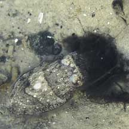
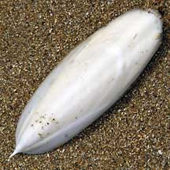
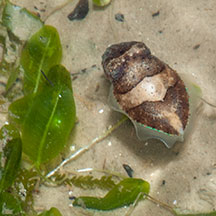

|
|
| cephalopods text index | photo index |
| Phylum Mollusca > Class Cephalopoda > squids and cuttlefishes |
| Cuttlefishes Family Sepiidae updated May 2020 Where seen? These rotund and chubby animals are seasonally common on many of our shores, usually near seagrass meadows. What are cuttlefish? Cuttlefish are not fish! They are molluscs (Phylum Mollusca) like snails, slugs and clams; and cephalopods (Class Cephalopoda) which include octopuses. They belong to the Order Sepiida. The family has more than 100 species many of which are only identified from the internal cuttlebones. Features: 5-10cm, but species found in deeper waters can grow to 40cm and more. Members of this family have oval-shaped or rounded bodies. The fins are about the same width throughout and edge the entire sides of the body. Cuttlefishes can change not only the patterns on their bodies, but also the texture! The internal shell (called the cuttlebone) is thick, chalky and porous. The cuttlebone contains gases that help the animal control its bouyancy. |
 Cuttlefish inking Chek Jawa, May 03 |
 Cuttlebone washed ashore. Chek Jawa, Mar 03 |
 Only slightly bigger than a blade of seagrass. Chek Jawa, Sep 03 |
| Disappearing Ink: Like other cephalopods,
the cuttlefish can squirt ink that distracts predators and clouds
up the water. More about this in the fact sheet on cephalopods. Human uses: Cuttlefishes are important fishery items in many parts of the world. Cuttlebones are marketted in the caged bird trade to provide calcium to these birds. In the past, cuttlefish ink, called 'sepia', was used for writing and painting. |
| Some Cuttlefishes on Singapore shores |
| Family
Sepiidae recorded for Singapore from Tan Siong Kiat and Henrietta P. M. Woo, 2010 Preliminary Checklist of The Molluscs of Singapore.
|
Links
|